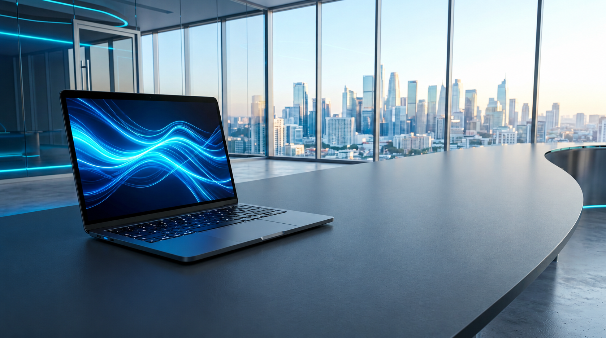

Логотип без вращения
Матовая поверхность вместо отражения. Логотип плавно приближается и удаляется, мягко подсвечиваясь. Экран ноутбука не закрашен.

Это изменённая копия фотографии для обсуждения. При включённом уменьшении движения логотип остаётся неподвижным. Сайт не изменён.